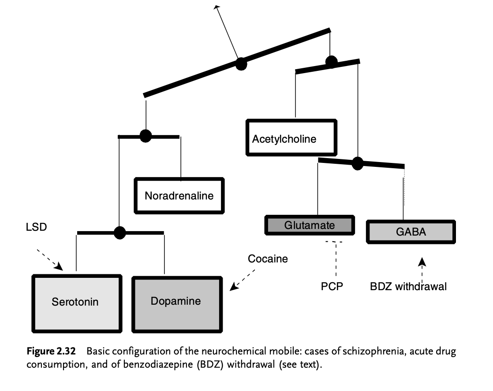
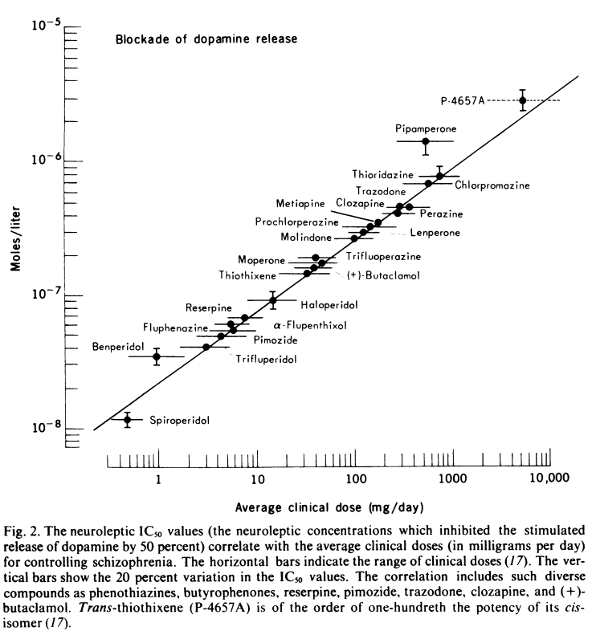
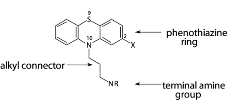
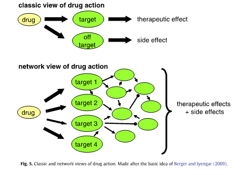

5 고전적 약물 작용 이론
5.1 고전적 약물 작용 이론
5.1.1 고전적 이론의 한계
약리학의 기본 원칙에 따르면, 약물은 수용체와 결합함으로써 효과를 발휘한다. 즉 수용체가 자물쇠라면 약물은 이를 여는 열쇠에 해당한다.1 약물이 수용체에 결합한 이후에 일어나는 현상은 효과기2가 담당하는 것이므로, 자물쇠를 열기만 하면 약물의 역할은 거기서 끝난다. 따라서 약물을 개발한다는 것은, 수용체에 달라 붙을 수 있는 3차원적 구조를 만들어내는 과정에 지나지 않는다.[1]
1 Lock and key model, 혹은 제안한 학자의 이름을 따서 Fisher theory라고 한다. 원래 효소와 기질의 관계를 설명하기 위해 제안된 이론이었으나, 약물에도 거의 그대로 적용되었다.
2 효과기 (effector): 생물학에서 효과기라 단백질에 붙어 생물학적 활성을 조절하는 물질들을 뭉뚱그려 가리킨다. 문맥에서는 수용체가 수신한 신호를 세포질 내에서 차례로 전달하여 궁극적으로 유전자 발현까지 전달하는 모든 중간단계 물질들을 의미한다.
그런데 몸 안에 수용체가 존재한다는 것은, 애초에 이 수용체에 결합하는 내인성 물질3이 있다는 증거가 된다. 이런 식으로 약물 → 수용체 → 내인성 물질의 순서로 발견되는 사례가 적지 않다.4 이런 논리 하에서 약물이 치료적이라는 것은, 애초에 내인성 물질이 제대로 기능하지 못하여 병이 생겼다는 식으로 해석된다. 즉 약물이 내인성 물질을 대신하거나 보충함으로써, 원래의 수용체 활성을 되찾도록 하는 것이 치료 과정이라는 이론이다.
3 내인성 물질(endogenous substance): 생체 내에서 비롯된 물질이란 뜻으로, 외부에서 만들어져 주입된 외인성(exogenous) 물질과 대조된다.
4 예를 들어 모르핀이 작용하는 수용체가 발견된 이후, 수년이 지난 다음에야 enkephalin을 비롯한 내인성 아편양 물질이 발견되었다. 한편 시그마 수용체처럼 수용체가 발견된 지 한참이 지났는데도 내인성 결합물질이 발견되지 않은 사례도 있다.
이러한 논리가 틀린 것은 아니지만, 전체적 맥락에서 분리된 채 하나의 수용체, 하나의 내인성 물질에만 집중하다보면 그 효과를 곡해하기 쉽상이다. 연구자들은 거시적인 시각을 통해 전체 맥락을 이해하고자 노력하기 보다는, 오히려 수용체의 서로 다른 아형(subtype) 하나하나를 가려내는 식으로 시야를 점점 더 좁히고 있다. 그러나 하나의 항정신병 약물은 수십가지 이상의 수용체에 동시다발적으로 작용하며, 신경전달물질 들은 서로가 서로간에 영향을 주기 때문에, 약물의 영향이 어디까지 뻗어나갈 지 아무도 이해하지 못한다.[2] 만약 각각의 신경전달물질 체계가 서로 균형을 이루는 것이 건강 상태이고 이 균형이 깨지는 것이 질병 상태라면, 물질 A의 활성이 떨어져 보이더라도 실제 문제는 물질 B에 있을 수 있다. 이 상황에서 치료를 위해 물질 A나 B의 활성을 조절하고자 하지만 그게 어렵다면, 물질 C를 변화시켜 새로운 균형을 유도할 수도 있을 것이다.

한편 내인성 물질이든 약물이든 일단 수용체에 결합하면 이후 효과는 동일하다는 전제도 받아들이기 어렵다.5 똑같이 수용체가 자극받았더라도 어떤 식으로 자극받았으냐에 따라 이후 세포 내 신호전달계6에 미치는 영향이 달라질 수 있다. 부분 효현제, 역 효현제나 다른 자리 입체성 조절제7의 발견은 그 대표적인 예라고 할 수 있다. [5–7] 또한 D2 수용체처럼 G 단백질을 매개로하는 수용체인 경우, 어떤 효현제에 의해 자극받느냐에 따라 전혀 다른 신호전달계가 활성화될 수 있다.8 시야를 넓히면, 약물이 수용체를 얼마나 차단했는지와 같은 정량적 지표뿐만 아니라, 언제, 어느 때, 어떤 조건 하에서 차단하였는지와 같은 정성적인 지표도 약물 효과를 이해하는 데 중요한 열쇠라는 것을 간과해선 안 된다.
5 1990년대 후반에 이르러 약리학자들 사이에서 기능 선택성(functional selectivity)이론이 논의되기 시작하였다. 고전적 약리학에서는 모든 수용체의 내인성 활성(intrinsic activity)이 고정되어 있으며, 리간드가 수용체에 결합한다는 것은 각 수용체 고유의 내인성 활성을 켜거나 끄는 것으로 이해되었다. 그러나 기능 선택성 이론에서는 수용체의 기능이 고정된 것이 아니고, 어떤 리간드가 어떤 상황에서 결합하느냐에 따라 수용체 스스로 자신이 발현할 작용을 선택할 수 있다고 본다.[4]
6 세포 내 신호전달계(Intracellular signal transduction system): 세포막 혹은 세포 내 수용체를 통해 수신된 신호를 세포질 혹은 핵 내부로 전달하는 다양한 경로. 세포 내 효과기들이 마치 계주를 하듯 연달아 신호를 전달하며, 참여하는 효과기들을 그 역할에 따라 2nd, 3rd, 4th… nth messenger라고 부른다. 신경전달물질 혹은 호르몬을 사용하는 세포 외 신호전달계와 대조되는 체계이다.
7 다른 자리 입체성 조절제 (allosteric modulator): 효소는 기질이 직접 달라 붙는 결합 부위(binding site)외에도 기질이 아닌 또 다른 물질들이 결합할 수 있는 조절 자리(allosteric site)를 갖고 있다. 조절 자리에 리간드가 붙으면, 전체적 3차원 구조가 변하면서 기질이 결합 부위에 붙는 것을 촉진할 수도 있고, 방해할 수도 있는데, 이를 다른 자리 입체성 조절이라고 하며,그 리간드를 다른 자리 입체성 조절제라고 한다.
8 예를 들어 효현제의 종류에 따라 G 단백질을 이루는 아단위(subunit)가 결합하는 성상이 달라지고, 이에 따라 자극받는 효과기도 달라진다.[8]
한편 치료 효과가 약물의 단기 효과에서 비롯되는지 장기 효과에서 비롯되는지 구분하기 어려우며, 동일한 약리학적 효과라도 궁극적으로 긍정적인지 부정적인지 가늠하기 어렵다. D2 수용체 차단이 항정신병 약물의 주된 치료 기전이라는 도파민 가설이 화려하게 등장한 후 얼마 안 되어, 이 가설을 탄생시킨 주역들은 장기간 약물을 사용하면 오히려 보상적으로 도파민 수용체가 증가된다는 것을 알게되었다.[9,10] 이 현상을 항정신병 약물에 대한 내성, 초과민성 정신증(hypersensitivity psychosis)의 원인이라며 부정적으로 해석할 수도 있지만, 전전두엽 도파민 활성을 증가시킨다는 면에서 긍정적으로 해석할 수도 있다. 즉 동일한 현상을 어떻게 해석해야 하는지에 대해서도, 견해가 통일되지 못하고 있다.
이처럼 고전적 이론은 약물이 수용체를 차단하거나 자극하여 효과를 나타낸다고 지극히 단순화시키지만, 약물이 초래하는 변화는 지극히 다양하며, 맥락에 따라 혹은 시간에 따라 전혀 다른 결과를 낳을 수 있다. 1990년대 중반 이후에는 신경가소성(neuroplasticity) 개념이 등장하면서, 약물의 궁극적인 치료 효과는 신경망의 재구조화에서 비롯된다는 패러다임의 변화가 있었다. 이러한 개념들의 소용돌이 속에서 항정신병 약물의 효과를 수용체의 차단 혹은 자극만으로 이해하는 고전적 이론은 더 이상 만족스러워 보이지 않는다.[11]
5.1.2 고전적 도파민 가설
항정신병 약물의 작용에 도파민 수용체 특히 D2 수용체 차단이 결정적 역할을 한다는 사실은 정신약물학 태동기에 등장한 탁월한 연구업적 중 하나이다. 클로르프로마진의 작용에 세로토닌이 관여하고, 조현병의 병인이 세로토닌의 불균형에 있다는 가설은 1954년 록펠러 의학연구소에 재직하던 Wooley9와 Shaw에 의해 제기되었다.[12] 10
9 Dilworth Wayne Woolley (1914~1966): 미국의 생화학자로 록펠러 의학연구소에 재직하였다. 비타민에 대한 연구 및 세로토닌의 역할에 대한 연구로 유명하다.
10 이들이 세로토닌을 언급한 것은 당시만 해도 밝혀진 알려진 신경전달물질이 세로토닌 밖에 없었기 때문인데, 그 때문인지 이들의 논문은 아무런 파급력이 없었다.
흔히 조현병의 도파민 가설은 Carlsson11이 제안한 것으로 여겨진다. 물론 도파민이 신경전달물질이라는 것을 발견한 사람이 Carlsson이고, 클로르프로마진과 할로페리돌이 몇 가지 단가 아민 수용체를 차단한다는 사실을 처음 발표한 것도 Carlsson이었다.[13] 그러나 도파민 효현제인 L-dopa와 암페타민이 정신증을 유발하고, 클로르프로마진이 도파민 수용체를 차단함으로써 정신증을 개선한다는 견해를 최초로 발표한 것은 네덜란드의 약리학자인 van Rossum이다.[14]
11 Arvid Carlsson (1923~2018): 스웨덴의 정신약물학자로 도파민이 신경전달물질이며, 도파민 부족때문에 파킨슨 병이 발생한다는 것을 알아내었다. 2000년 노벨 의학상을 수상하였다.
각각 1963년과 66년에 발표된 Carlsson과 van Rossum의 논문은, 모두 저자들의 고국인 스웨덴과 네덜란드의 국내학회지에 발표될 정도로 학계의 주목을 받지 못했다. 조심스레 도파민이 조현병의 원인으로 제시되었지만, 당시만해도 수용체라는 개념 자체가 존재하지 않았기 때문에 도파민이 어떤 역할을 하는 지에 대해선 그럴듯한 설명을 하지 못하였다.
1970년 대에 들어서야 아세틸콜린 수용체 발견을 계기로 비로소 수용체 개념이 도입되었고, 1972년에는 방사성 동위원소를 이용하여 신경전달물질 수용체를 연구하는 방법이 정립되었다. 1974년 Snyder12는 D1과 D2의 두 가지 도파민 수용체를 발견하였으며, 항정신병 약물이 주로 D2 수용체에 결합한다는 것도 알아내었다. 2년후인 1976에 Snyder는 바아흐로 조현병이 도파민 수용체 과다 흥분으로 일어난다는 가설을 발표하였다.[15]
12 Solomon H. Snyder (1938~): 미국의 신경과학자. 존스 홉킨스 의과대학에 재직하면서, 신경전달물질 수용체에 대한 연구를 수행하였다. 아편 수용체를 발견한 것으로도 유명하다.
당시만해도 일부 연구자 들의 흥미를 자극하는데 그치고 있었던 도파민 가설을 그야말로 표준 이론으로 격상시킨 인물은 Seeman13이었다. 그는 Janssen14의 도움을 얻어 방사성 동위원소가 붙은 할로페리돌을 실험에 이용할 수 있었는데, 이를 이용해 항정신병 약물이 도파민 수용체에 밀접하게 결합한다는 것을 증명하였을 뿐 아니라 이를 정량화하는데도 성공하였다. 방사성 동위원소를 이용한 실험 기법이 능숙해지자, 그는 다양한 항정신병 약물의 평균 치료 용량과 도파민 수용체 결합 세기를 비교해보았는데, 그 결과 확연한 비례 관계를 발견할 수 있었다. 그가 해당 논문에 실은 도표는 이후 수세기에 걸쳐 도파민 가설의 가장 유력한 증거로 인정받았고, 정신약물학 역사상 가장 유명한 그림 중 하나가 되었다.[16] 이 결과는 이듬해 발표된 Snyder의 논문[15]에 큰 힘을 실어주었다.
13 Philip Seeman (1934~2021): 캐나다의 정신약물학자. 생체 내에서 도파민 수용체 활성을 측정하는 방법을 완성시켰고, 이는 향후 신약 선별 과정에 큰 도움을 주었다. 나중에는 Kapur와 함께 신속 해리 가설을 제안하여, 비정형 항정신병 약물이 왜 추체외로 부작용이 적은 지 설명하였다.
14 Paul Janssen (1926~2003):할로페리돌을 개발한 얀센 사의 대표

Seeman과 Snyder는 자신들의 성공에 안주하지 않고, 항정신병 약물을 오래 사용했을 때 뇌내 도파민 수용체가 어떻게 변화하는지 살펴보았다.[9,10] 그들은 일부 환자의 뇌에서 도파민 수용체 농도가 비정상적으로 높아져 있음을 발견하고, 장기간의 약물 사용이 과연 조현병 치료에 긍정적인지 의문을 품기 시작하였다. 1980년대가 되자 Snyder는 물론 Carlsson 마저 도파민 과다활성이 조현병을 일으킨다는 단순한 이론에 등을 돌리기 시작하였다. 이처럼 창안자들에게조차 외면되기 시작한 후에도 고전적 도파민 가설은 신약 개발의 출발점이 되었을 뿐더러, 대중의 인식에 뿌리깊게 자리잡았다. 명확하고 이해하기 쉽기 때문에, 교육, 홍보 자료에는 예외없이 조현병의 원인이자 치료 기전으로 도파민 가설이 소개되었다. 제약회사들은 조현병 및 우울증 등 정신 질환을 화학 물질의 불균형(chemical imbalance)이라는 수사학으로 포장하였고, 약물 치료를 통해 다시 균형을 회복할 수 있다며 다투어 선전하였다.[17] 이후 도파민 가설을 대체할 만한 수많은 가설들이 쏟아져나왔음에도 불구하고, 대중들에게 친근하고 강력하게 다가갈 수사학적 매력이 부족한 탓인지, 도파민 가설만큼의 영향력을 발휘하지 못하였다.
5.1.3 추체외로 증후군과 지연운동장애
추체외로 체계15라는 개념은 미국의 신경학자인 Wilson16에 의해 명문화되었다.[18] 그는 자신의 이름을 따 지은 Wilson 병17 환자의 사후 뇌조직을 검사하던 도중, 기저핵에 생긴 병변을 발견하고 이를 추체외로 경로(extrapyramidal tract)라고 이름 지었다. 곧 이어 이 경로가 파킨슨 병 증상을 일으키는데 중요한 역할을 한다는 것이 밝혀졌다.18
15 추체외로 체계 (extrapyramidal system): 주로 불수의 운동을 관장하는 운동 조절 신경계. 연수의 피라미드(medullary pyramids)를 거쳐 지나가는 수의 운동 조절 신경섬유와 구분하기 위해 이런 이름이 붙여졌다. 1898년 우크라이나의 의사인 Johann Prus가 처음 기술하였는데, 그는 동물실험을 통해 피라미드 경로를 차례대로 절제했음에도 불구하고 경련발작이 멈추지 않는 것을 관찰하고, 운동신경을 조절하는 경로가 피라미드 경로 외에도 존재할 것이라 추측하였다.
16 Samuel Kinnier Alexander Wilson (1878~1937): 20세기 전반기에 미국에서 가장 위대한 신경과 의사라 칭송받던 인물. 그의 이름을 딴 Wilson 병을 비롯하여, 추체외로 경로를 침범하는 다양한 운동 장애를 발견하였다.
17 Wilson’s disease (hepatolenticular degeneration): 선천적 유전 질환으로, 체내의 구리를 담즙으로 배출하는 단백질의 변이로 말미암아 몸 속에 구리가 침착된다. 주로 간과 렌즈핵(피각과 담창구)에 구리가 침착되며, 간경화와 특이한 운동장애를 보인다.)
18 파킨슨 병을 처음 기술한 James Parkinson은 파킨슨 병의 주요 증상인 진전 마비(shaking palsy)의 병변이 “medulla spinalis” 즉 척수에 있다고 잘못 생각하였으나, 이후 독일의 신경학자인 Herman Oppenheim가 이는 척수가 아닌 또 다른 운동 조절 경로의 이상때문이라고 수정하였다.
한편 항정신병 약물과 추체외로 부작용 간의 연관을 처음 인지한 것은 각각 스위스와 독일의 정신과 의사인 Steck19과 Haase20였다.[19,20] 그들은 클로르프로마진을 복용한 환자들이 행동을 개시하는데 어려움을 겪고, 표정이 굳어있으며, 근경직을 보인다는 것에 주목하였다. 이런 현상이 용량을 높일수록 심해진다는 것도 확인하였다. Steck은 이미 1930년 무렵 기면성 뇌염21 환자들이 정신 증상과 함께 추체외로 증후군(extrapyramidal syndrome, EPS)을 보인다는 것을 이해하고 있었다. 그래서인지 Steck은 조현병이 기질적 원인에 의한 질병이라는 가정 하에, EPS를 조현병의 일부라고 생각하였다.[21] 한편 Haase는 항정신병 약물이 효과를 나타내려면 EPS가 생기는 것이 불가피하다고 보았으며, 다만 심한 불편감을 일으키지 않는 범위에서 용량을 정하면 된다고 하였다. [22,23] 약물의 치료 효과가 EPS와 불가분의 관계에 있다는 Haase와 당대 의사들의 믿음은 1960년대에 들어와서야 부정된다. 1964년 미국 국립정신보건연구원(NIMH)의 후원으로 진행된 연구에서, 약물이 일으키는 EPS의 정도와 치료 효과 사이에는 아무런 상관관계가 없다는 것이 확실해졌다.[24] 더군다나 1960년대 중반에 임상시험을 거친 클로자핀은 EPS를 거의 일으키지 않으면서도 치료 효과가 탁월하였다.
19 Hans Steck (1891~1980): 스위스의 정신과 의사. Lausanne 대학에서 교수로 재임하였으며, 부설 Cery 수용소의 원장을 역임하였다. 조현병 환자의 예술 표현에 관심이 많았으며, 당대 유명 화가인 Jean Dubuffet의 “art brut (outsider art)” 운동의 영향을 받아 자신이 돌보던 조현병 환자인 Aloïse Corbaz (1986~1964)를 유명 화가로 발굴하였다.
20 Hans-Joachim Haase (1922~1997): 독일의 정신과 의사이자 정신분석가. 추체외로 증상을 일으킬 정도의 용량을 써야, 항정신병 약물의 치료 효과를 최대로 얻을 수 있다는 “neuroleptic threshold”이론을 제안하였다.
21 기면성 뇌염 (encephalitis lethargica): 20세기 초 전세계를 휩쓸었던 신경학 질환. 환자를 내내 수면이나 강직 상태에 빠뜨리는 것이 특징이다. 1917년 신경학자 Constantin von Economo에 의해 처음 기술되었다. 원인이 되는 세균이나 바이러스는 발견하지 못했다. 다만 자가면역질환이라는 이론도 있으나, 그것만 갖고는 1915~1926년 사이의 대유행을 설명하지 못한다.
한편 항정신병 약물 복용 후 비가역적인 운동장애가 생겼다는 최초의 보고는 1957년 Schonecker[25]에 의해 이루어졌으며, 지연성 운동장애(tardive dyskinesia, TD)라는 이름은 1964년 Faurbye22에 의해 붙여졌다.[26] TD의 발생기전은 아직까지도 명확하지 않으나, EPS는 의심할 여지없이 흑질-선조체 도파민 경로의 D2 수용체 차단에 의해 발생한다. 선조체에 존재하는 아세틸콜린 분비 사이뉴런은 평상시 항상 활성상태에 놓여있다. 이 뉴런에는 D2 수용체가 있어서 흑질-선조체 경로로부터 분비된 도파민에 의해 활성이 차단된다. 항정신병 약물에 의해 D2 수용체가 차단되면 콜린성 뉴런의 활성이 걷잡을 수 없이 증가하면서 이상 운동 현상이 생기는 것으로 이해된다.[27] 이 때문에 항콜린제를 사용하면 EPS가 일시적으로 경감하게 된다.
22 Arild Faubye: 덴마크의 정신과 의사. Saint Hans Hospital에서 일했다.
그에 비해 TD는 만성적인 D2 수용체 차단에 의해 수용체가 보상적으로 과다 생성되어 발생하는 일종의 도파민 초과민성23 현상이라고 이해된다.[29] 그러나 EPS는 물론 TD의 발생과정에 대해서도 이해되지 않는 부분이 한두군데가 아니다. EPS가 D2 차단때문에, TD는 D2 과민화때문에 생긴다면 서로 반대방향인데도 왜 증상은 유사한지, EPS는 왜 항정신병 약물을 투여하고 일정 시간이 지나야 나타나기 시작하는지, 항정신병 약물을 끊는다고 해도 왜 EPS가 금방 소실되지 않는지, 왜 특정 환자에서만 EPS나 TD가 발생하는지 등 이런 식의 의문들에 대해선 아직 만족스러운 답이 제시되지 않았다.[30] 풀리지 않는 궁금증이 한 두개가 아니지만 다행스러운 것은, 항정신병 약물의 세대교체를 통해 EPS와 TD의 문제를 상당부분 해결했다는 점이다.
23 도파민 초과민성 (dopamine supersensitivity): 이 이론은 1970년대 중반부터 논의가 시작되었으며 Chouinard와 Jones[28]에 의해 체계적인 이론으로 자리잡았다. 애초에는 삽화가 반복되면서 항정신병 약물이 더 이상 듣지 않는 내성 현상을 설명하기 위해 도입되었으며, 이후 TD의 발생 기전으로 확장되었다. 이 이론은 찬반양론이 분분하다. 일단 지지자들이 말하는 내성 현상은 재발이 반복될수록 치료가 안 되는 질병의 자연경과로 이해할 수 있다. 항정신병 약물을 오래 사용하면 도파민 수용체가 보상적으로 증가하는 것은 맞지만, 이는 치료가 잘 되는 환자에서도 마찬가지이다. 따라서 보상적 증가가 반드시 증상 악화로 이어진다는 증거는 없다. 따라서 비판하는 학자들은 이 이론이 항정신병 약물치료에 반대하는 세력의 선동문구로 이용될 우려가 있다고 본다.
5.2 약물의 구조와 약리학적 특성
5.2.1 항정신병 약물의 화학구조
생리현상을 구성하는 모든 종류의 분자들은 “구조가 기능을 결정한다”는 원칙을 따르고 있다. 효소와 수용체를 비롯한 생물학적 거대 분자들은 독특한 3차원적 구조(3-dimensional conformation)를 지니고 있으며, 또 다른 독특한 3차원적 구조를 지닌 분자들만이 여기에 결합할 수 있다.24 따라서 약물 개발은 원하는 3차원적 구조를 만드는 지난한 노력이라고 이해할 수 있다.25 구조를 결정하는 것은 분자의 화학식 뿐 아니라 곁가지에 자리잡고 있는 원소들의 전하가 중요한데, 이는 같은 극성의 전하들이 서로 밀어내는 척력때문에 구조가 호환되더라도 실제로는 결합하지 못하는 사태가 발생하기 때문이다.
24 효소에 결합하여 복합체를 형성하는 모든 물질을 리간드(ligand)라고 한다. 그중에서도 효소의 결합부위에 결합하여 효소의 작용을 받는 리간드를 기질(substrate)이라고 한다.
25 단백질의 3차원 구조는 아미노산 서열에 의해 결정된다. 하나의 단백질을 구성하는 아미노산들이 지극히 복잡한 상호작용을 거쳐 독특한 구조로 안정화되는데, 이를 단백질 접힘(protein folding)이라고 한다. 서열로부터 구조를 예측하는 것은 오랫동안 약물 개발자들의 염원이었는데, Google 산하의 기업인 DeepMind 사는 2020년에 이를 가능하게 하는 인공지능 프로그램 AlphaFold를 개발하였다.

클로르프로마진의 중심구조를 형성하는 phenothaizine은 하나의 질소(nitrogen)와 하나의 황(sulfur)를 포함한 thiazine 고리에, 두 개의 벤젠 고리(phenyl ring)가 양쪽에 붙어있는 형태를 지니고 있다. 이러한 삼환계(tricyclic) 구조는 항우울제와도 공유하기 때문에, 정신약물학은 이 세 개의 고리로부터 출발했다고 말해도 무방하다.26 Phenothiazine은 thiazine 고리에 붙어있는 곁가지의 종류에 따라 1) 지방족 화합물(aliphatic compound), 2) piperidines, 3) piperazines로 나누어진다. 참고로 클로르프로마진은 지방족 화합물, thioridazine은 piperidines, 그리고 fluphenazine은 piperazines 구조이다.
26 Phenothiazine 구조는 1876년 염색 물질의 한 종류인 메틸렌 블루(methylene blue)가 합성되면서 화학 공정에 처음 모습을 드러냈다. Paul Charpentier에 의해 다양한 유도체가 만들어졌으며, 그는 이 과정 중에 클로르프로마진을 합성한다.
분자 구조는 약물이 신경전달물질 수용체에 결합하는 데 필요한 화학적, 물리적 특성을 부여한다. Phenothiazine은 10번 위치의 질소(N10)에 붙어있는 곁가지와 2번 위치의 탄소(C2)에 붙은 원소에 의해 성질이 달라진다. 곁가지 말단에 위치한 아민(terminal amine)은 도파민 수용체에 결합하는데 필요한 3차원적 구조를 제공해준다. 이에 비해 전반적 뼈대를 이루는 벤젠 고리는 지용성을 부여하여, 약물이 뇌-혈관 장벽을 넘어 중추신경계까지 운반되도록한다. 이에 비해 C2에 붙어있는 염기는 전기적 성질을 결정하며, 이에 따라 항정신병 약물의 고유한 개성이 결정된다.[31]
정형 항정신병 약물은 크게 phenothiazines/thioxanthenes 계열, 그리고 butyrophenones/diphenyl-butylamine 계열로 나누어진다. 화학구조가 조금씩 다르지만 차이점보다는 공통점이 더 많은 편이다. Thioxanthenes은 N10이 탄소로 치환되어 있는 것을 제외하고는 phenothiazine과 동일한 구조이다. 그래서인지 이 계열에 속하는 thiothixene, clopenthixol, fluphenthixol은 클로르프로마진과 거의 동일한 성질을 지닌다.
할로페리돌로 대표되는 butyrophenones은 벤젠 고리가 하나밖에 없다. 그러나 3차원적 구조를 보면, 가운데 thiazine 고리가 해체되었을 뿐 두개의 벤젠 고리가 있는 것은 phenothiazine과 동일하다. Butyrophenones은 도파민 수용체에 대한 결합력이 매우 강하며, 다른 수용체에 결합하는 능력은 phenothiazine에 비해 떨어진다. 구조가 거의 유사한 diphenyl-butyl piperidines은 도파민 수용체 결합력이 한층 더 강하며 피모자이드가 그 대표적인 약물이다. 네가지 계열을 놓고보면, phenothiazine → thixanthenes → butyrophenones → diphenyl-butylamine의 순서로 역가가 점점 더 강해지며, 동시에 도파민 수용체 결합력도 높아진다. 두고두고 논란의 중심이 되는 1) 저역가 약물과 고역가 약물, 2) 다수용체 결합 약물과 순수 도파민 수용체 차단 약물의 구분은 이런 화학 구조에서 비롯된다.
비정형 약물이 도입된 이후에는 구조가 훨씬 다양해졌지만, 1) 전체적으로 삼환계 구조를 유지하고 있는 클로자핀, 올란자핀, 퀘티아핀과 2) butyrophenones의 기본 골격을 물려받은 리스페리돈, 지프라시돈, 아리피프라졸로 크게 구분된다. 이러한 구조의 차이때문인지 전자에는 대체로 다수용체 작용 약물이 많으며, 후자에는 도파민/세로토닌 수용체에 집중적으로 작용하는 약물이 많다.
5.2.2 항정신병 약물의 수용체 결합 프로파일
Seeman의 유명한 도표(6-2-3절) 이후로, 항정신병 약물이 치료 효과를 내려면 D2 수용체를 충분히 차단해야 한다는 것은 누구도 부인할 수 없어 보였다.[16] 초창기에는 D2 이외의 수용체에 대한 작용은 원치 않는 부작용만 낳는 것으로 여겨졌다.27 따라서 약물 개발자들은 좀더 순수한 D2 수용체 길항제를 찾는 데 여념이 없었으며. 할로페리돌, 설프라이드, 피모자이드 등은 이런 목표 아래 개발된 성공적인 사례였다.
27 예를 들어 콜린 수용체 차단은 변비, 입마름, 기억력 저하, 섬망 등을 일으키며, 아드레날린 수용체 차단은 어지러움이나 기립성 저혈압을, 항히스타민 효과는 졸리움과 체중 증가를 가져온다는 식이었다.
이 당시에 정신약물학을 공부하는 학생이 수용체 결합 프로파일을 외워야 했던 이유는, 예상되는 약물의 부작용을 이해하기 때문이었다. 정신약물학 교과서들은 각각의 수용체에 해당되는 부작용을 열거하면서 이를 깔끔하게 표로 정리해놓기도 하였다. 추체외로 증상은 치료에 필요하기 때문에 어쩔 수 없이 감수해야하는 부분이지만, 나머지 부작용들은 순수한 D2 길항제 개발을 통해 없애야 하고, 또 없앨 수 있는 부분으로 묘사되었다.
그러나 가장 효과가 우수하다는 클로자핀은 D1, D2, D3, D4, α1, α2, 5-HT2, 5-HT1A, H1, 그리고 니코틴성/무스린성 콜린 수용체 등에 결합할 수 있는 다수용체 길항제28이다. 고정된 편견에서 벗어나고자 했던 일부 연구자들은 클로자핀의 독특한 효과가 D2 이외의 수용체에서 비롯된 것이 아닐까 의문을 품기 시작하였으며, 특히 5-HT에 주목하기 시작한 학자들을 통해 비정형성이라는 개념이 태어나게 되었다.[32] 현 세대의 의사들 중에서 항정신병 효과가 D2 수용체 차단만으로 100% 설명된다고 믿는 사람은 거의 없을 것이다. 그러나 여전히 많은 사람들은 치료 효과는 오롯이 D2 차단에서 비롯되며, 나머지는 그저 부작용을 줄이는데 기여한다고 믿는다. 실제로 Girgis 등[33]의 문헌 고찰에 의하면, D2 이외의 수용체가 치료 효과를 낸다는 가설을 검증하고자 했던 연구가 250건 이상 행해졌으나, 그중 어느 것도 확고한 결과를 내놓지 못하였다.29
28 다수용체 길항제 (multi-acting receptor-targeted antipsychotics, MARTA)
29 물론 예외는 있다. Pimavanserin은 파킨슨 병 혹은 치매 환자의 망상 및 환각 치료에 사용될 목적으로 2016년 미국 FDA의 승인을 받았다. 이 약물은 도파민 수용체에 대한 효과가 없는 순수한 5-HT2A 길항제로서, D2 차단 없이도 항정신증 효과를 낼 수 있다는 첫번째 사례가 되었다.[34]
어찌되었던 연구 성과의 축적과 개념의 확장을 통하여, 비 도파민 수용체를 포함하는 수용체 결합 프로파일은 부작용을 이해하는 것만을 넘어서, 독특한 치료 효과를 이해하는데 중요한 요소가 되었다.
5.3 약물 작용의 네트워크적 시각
모든 약리학적 작용이 치료적 효과와 맞아 떨어지는 것은 아니다. 이상적인 세계라면 질병은 단일한 원인을 갖고, 약물 역시 단일한 작용 기전을 갖고 있으며, 이 둘이 맞아떨어지면 치료가 성공적으로 이루어진다고 할 수 있다. 그러나 현실에서 질병은 복잡하기 짝이없는 생리현상의 불균형으로 일어나며, 약물 역시 전부 다 열거하기 힘든 수많은 효과들을 지닌다. 동일한 약물이 어떤 환자에게는 도움이 되지만 또 다른 환자에게는 고통만을 가져올 수 있으며, 심지어 같은 환자라도 신체의 상황과 맥락에 따라 전혀 다른 결과를 가져올 수 있다.

이를 이해하기 위해서는 네트워크적 시각이 필요할 지도 모른다.[35] 이는 약물이 포함된 일련의 현상을 하나의 복잡계(complex system)로 바라보는 것으로, 구성 요소 각각이 서로에게 영향을 미치는 네트워크 혹은 계(system)에서, 어느 한 요소(예를 들어 약물)의 변화가 전체 계에 가져오는 변화를 거시적인 시각에서 분석해내고자 한다. 약물의 효과는 약물 자체의 성질뿐 아니라, 전체 계의 현 상태에 의해 결정된다. 약물이 작용하기 시작하면 전체 계의 상태가 변화하고, 변화된 계의 상태에 따라 발휘되는 약물의 효과도 달라질 수 밖에 없다. 이를 미분 방정식으로 풀어내면, 약물이 전체 계에 유발하는 창발30 속성(emergent property)을 예측해낼 수 있을 것이다.[36,37]
30 창발 (emergence): 각각의 구성 요소에서는 발견할 수 없었던 성질이, 이들이 상호작용하는 전체 계 혹은 네트워크에서 발현되기 시작하는 현상. 창발 이론(emergentism)은 물질의 속성이 물질 자체에 깃들어있는 것이 아니라, 구성 요소들의 상호작용에서 우러난다는 철학적 이론이다. 신경세포의 상호작용으로부터 정신 현상이 우러나는 것은 대표적인 창발 현상이다.
복잡계 이론(complex adaptive theory)은 1970년대 무렵부터 학자들의 관심을 모으기 시작하여 꾸준히 연구되어 왔고, 이를 분자생물학에 접목시킨 시스템 생물학(systems biology)을 비롯하여, 시스템 약리학(systems pharmacology), 네트워크 의학(network medicine) 등 새로운 학문 분야가 차곡차곡 이론적 틀을 다져 왔다.[38,39] 아쉽게도 새롭게 태동하는 이런 학문들은 정신약물학의 미래가 지향해야할 방향은 맞지만, 아직 실질적 성과를 내지 못하고 있다.[40,41] 방대한 개별 지식들을 통합할 수 있는, 이론적 틀이 준비되려면 앞으로도 오랜 시간을 기다려야 할 것 같다.
약물의 작용기전들을 복잡계 차원에서 통합하여 새로운 이해의 틀을 제시하는 것은 본서 저자들의 역량을 넘어선다. 대신 본서의 저자들은 항정신병 약물의 치료 효과를 다양한 시각에서 바라보았던 선대 연구자들의 발자취를 하나하나 되짚어 보고자 한다. 전통적인 시각인 신경전달물질 수용체에 대한 효과뿐 아니라, 이를 넘어 다양한 영역으로 확장된 개념들, 실질적인 성과는 없었지만 기존에 생각해보지 못했던 틈새를 비춰주는 여러가지 가설들을 될 수 있는 한 폭 넓게 살펴보고자 한다. 비록 단순한 열거에 그칠 지 모르지만, 독자들의 시야를 넓혀 정신약물학의 깊이와 폭을 실감하도록 하고, 좀더 새롭고 창의적인 영감을 얻을 수 있도록 돕는 것이 저자들의 바람이다.